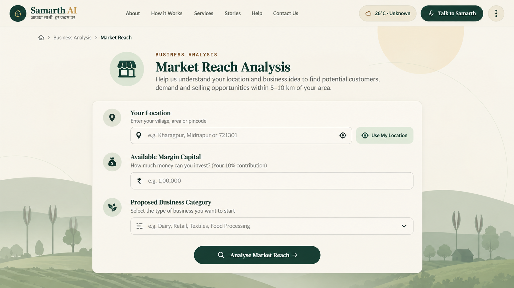

No local market data
Unclear demand, pricing and market reach.
Samarth AI is a multilingual, voice-first decision-support platform for rural micro-entrepreneurs — combining hyper-local market intelligence, business feasibility, financial structuring and scheme guidance in one simple experience.
“Just speak. Samarth listens, understands and helps with the next step.”
Rural entrepreneurs may have capital access but still lack the local market intelligence, financial clarity and personalized guidance needed to choose and structure a viable enterprise.
Unclear demand, pricing and market reach.
Choices can be based on anecdotal success rather than feasibility.
Loans, margin requirements and repayment can be difficult to structure.
Seasonality, supply bottlenecks, competition and buyer dependency.
Samarth turns a few basic inputs into a structured view of local opportunity and financial feasibility.
Market reach, customer base, distribution channels and local demand signals within the selected area.
Opportunity analysis, SWOT, competitor mapping, threats and product-market value.
Converts available margin into a clear project-cost and borrowing roadmap using deterministic financial logic.
Routes users toward relevant government-scheme information and presents eligibility and repayment context.
The inspector can follow the exact three-stage experience used to demonstrate the 5–10 km local market analysis concept.

The user provides a location, available margin capital and proposed business category. The interface stays intentionally simple and visual.
Voice and text sit on top of a structured backend, retrieval layer, deterministic financial logic and external information services.
Designed around technologies already used in the working prototype and documented project architecture.
The financial layer is designed to turn the beneficiary’s available contribution into an understandable project-cost and loan roadmap.
Our submission references government surveys, MSME programmes and national rural-AI initiatives to ground the problem and ecosystem context.
Samarth aims to make local market intelligence, financial literacy, scheme information and business guidance more understandable and accessible to rural users.
Future work expands the knowledge base, integrations and accessibility while keeping the core architecture modular.
Use this portfolio as the technical and product companion to our SIH submission.